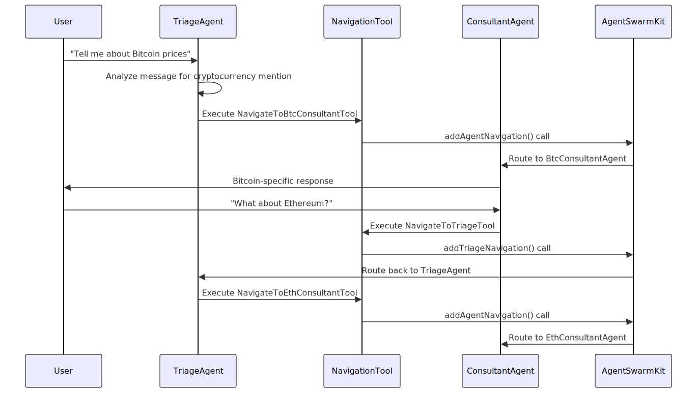

This document explains the navigation and routing system within the AI agent swarm, focusing on how users are directed between the triage agent and specialized cryptocurrency consultant agents. The system uses the agent-swarm-kit framework to provide seamless navigation between different conversation contexts based on user intent and cryptocurrency mentions.
For information about the individual consultant agents themselves, see Cryptocurrency Consultant Agents. For the overall agent architecture setup, see Agent Architecture and Setup.
The triage system is built around the TriageAgent, which serves as the primary entry point and router for user conversations. This agent analyzes user messages to determine which cryptocurrency the user is interested in and routes them to the appropriate specialist consultant.

The navigation system uses a collection of specialized tools that handle routing between agents. Each navigation tool is responsible for detecting specific cryptocurrency mentions and initiating the appropriate agent transition.
| Tool Name | Target Agent | Trigger Condition |
|---|---|---|
NavigateToBtcConsultantTool |
BtcConsultantAgent |
Bitcoin (BTC) mentions |
NavigateToEthConsultantTool |
EthConsultantAgent |
Ethereum (ETH) mentions |
NavigateToBnbConsultantTool |
BnbConsultantAgent |
Binance Coin (BNB) mentions |
NavigateToXrpConsultantTool |
XrpConsultantAgent |
Ripple (XRP) mentions |
NavigateToSolConsultantTool |
SolConsultantAgent |
Solana (SOL) mentions |
NavigateToTriageTool |
TriageAgent |
Off-topic or return navigation |
The routing process follows a structured pattern where the triage agent maintains conversation flow while evaluating each user message for navigation triggers.

Each cryptocurrency-specific navigation tool follows a consistent implementation pattern using the addAgentNavigation function from agent-swarm-kit:

Key Implementation Details:
AgentName enum for type safetyThe NavigateToTriageTool uses addTriageNavigation instead of addAgentNavigation, providing a special mechanism for returning to the main routing agent:
Features:
commitFlushForce(clientId) before navigation to ensure clean state transitionThe SignalMetaService provides mapping between agent names and their corresponding trading symbols and display names, supporting the navigation system with metadata:

Mapping Tables:
| Agent | Trading Symbol | Display Name |
|---|---|---|
BtcConsultantAgent |
BTCUSDT |
Bitcoin |
EthConsultantAgent |
ETHUSDT |
Ethereum |
BnbConsultantAgent |
BNBUSDT |
Binance Coin |
XrpConsultantAgent |
XRPUSDT |
Ripple |
SolConsultantAgent |
SOLUSDT |
Solana |
The triage agent implements several callback mechanisms for robust error handling and user experience management:
Callback Functions:
./tool_error.txt for debuggingError Logging Structure: